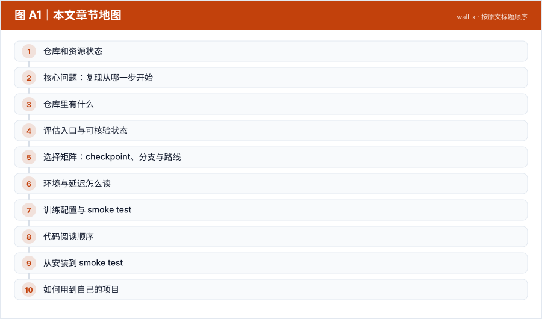
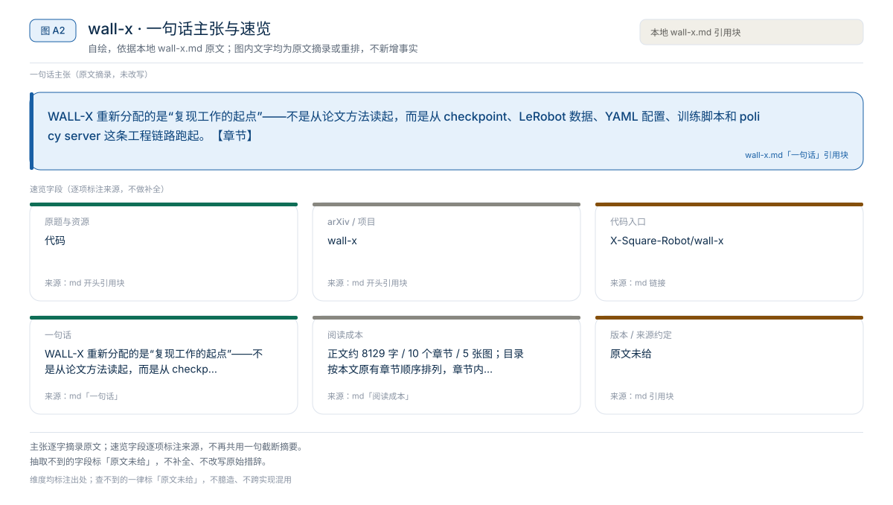
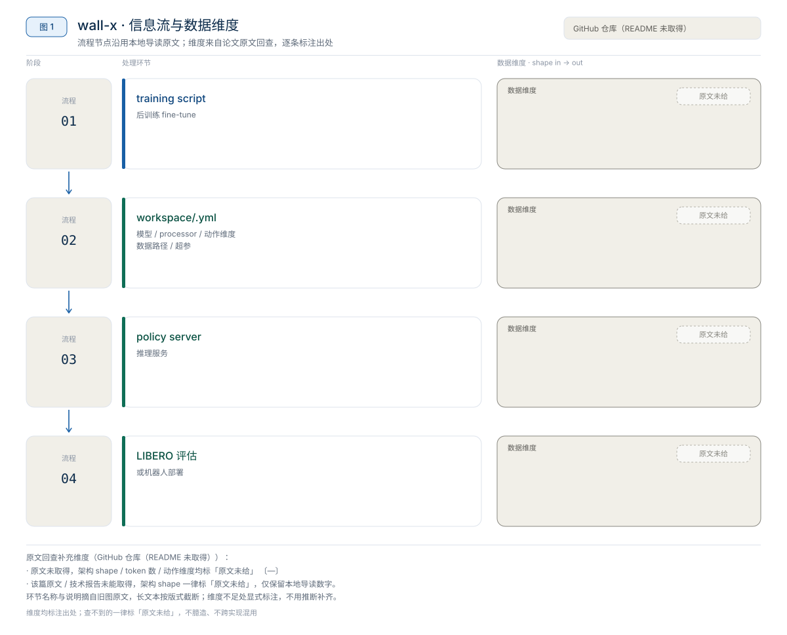
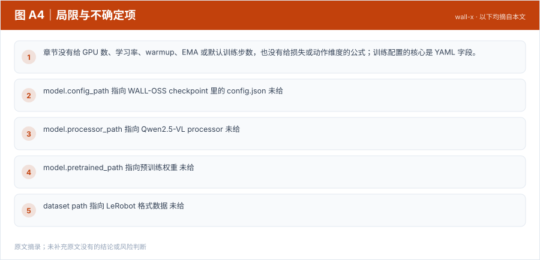

【VLA 精读 · 轻量化部署】DM0.5：把 VLA 在线执行链路逐段压成低延迟服务
DM0.5 重新分配的是“模型语义”和“执行形状”的边界——模型结构保持 Gemma3 VLM + Action Expert + Flow Matching，但把在线执行拆成 prefix 一次编码、suffix 反复采样，再用 TensorRT、FlexAttention、FP8、Triton fused kernels 和 CUDA Graph 压缩固定形状的计算与调度。【章节】
轻量化部署
原题与资源：代码
一句话：WALL-X 重新分配的是“复现工作的起点”——不是从论文方法读起，而是从 checkpoint、LeRobot 数据、YAML 配置、训练脚本和 policy server 这条工程链路跑起。【章节】
阅读成本：正文约 8129 字 / 10 个章节 / 5 张图；目录按本文原有章节顺序排列，章节内容未改动。
目录（点击跳到对应章节）：

图 A1：本文章节地图（节点即原文 h2 标题）。自绘，依据本文，不新增事实。
WALL-X 不是论文，是 X Square Robot 给 WALL 系列模型提供的开源工程栈：下载 checkpoint、准备 LeRobot 数据、写 YAML、跑后训练、起 policy server、做 LIBERO / 真机评估的代码入口。本地章节给出的可核验数字都是工程口径：支持 4 个 checkpoint 变体、Python 3.10、LeRobot 固定 commit c66cd401767e60baece16e1cf68da2824227e076、MAX_JOBS=8 编译 CUDA op、Apache-2.0 license。章节没有给任何模型性能、显存或延迟数字；本文按“工程导航”写，不按“论文方法”写。
来源约定：本文事实只取自本仓库 WALL-X 导读，没有用模型记忆补写仓库细节。
标注约定：【章节】指本地导读自己的归纳；【章节转述】指导读对官方 README、workspace guide 或模型页的转述。WALL-X 自身 commit 章节未给。
版本：无 arXiv；WALL-X commit 章节未给；LeRobot 固定 commitc66cd401…；workspace README 当前面向 Wall-OSS-0.5；查阅日期 2026-11-01。
| 资源 | 入口 | 说明 |
|---|---|---|
| 论文 | 无独立论文 | 章节明确说明 WALL-X 是工程框架；方法读 WALL-OSS 精读，不把工程栈当论文 |
| 源码 | X-Square-Robot/wall-x | 训练、推理、评估、serving 与 CUDA op |
| 权重 | x-square-robot/wall-oss-0.5、wall-oss-flow、wall-oss-fast | 当前 README 列出 4 个变体；wall-oss-flow-0.1 章节只给名称、未给链接 |
| 项目页 | 章节未给 | 本地章节没有出现项目页 |
| 官方文档 | workspace/README.md | Wall-OSS-0.5 的 fine-tune、simulation evaluation、real robot deployment |
| License | Apache-2.0 | 章节转述仓库 license |
版本提示：WALL-X README 的 News 同时提到 WALL-OSS、WALL-OSS-0.5 和 WALL-WM，容易让人误以为“WALL-WM 完整代码已能一键复现”。更谨慎的理解是：WALL-X 当前明确提供的是 WALL 系列开源模型的训练与推理栈；WALL-WM 的论文和 PDF 已公开，但完整事件级 world action model 的权重、事件数据和训练 recipe 不能直接从 WALL-X 模型列表中确认。【章节】

图 A2：一句话主张与速览字段。自绘，依据本文，不新增事实。
一句话：WALL-X 重新分配的是“复现工作的起点”——不是从论文方法读起，而是从 checkpoint、LeRobot 数据、YAML 配置、训练脚本和 policy server 这条工程链路跑起。【章节】

图 1：WALL-X 从 checkpoint 与数据到训练、服务和评估的工程链路。自绘，依据本地导读；不是论文原图。
对比两种入口：论文复现包（方法 + 权重 + 数据 + 训练 recipe 一起给）→ 工程栈（把已有 checkpoint 接到数据、配置、训练和服务上）。【章节】
图 A3：本文可核验的数字摘录。自绘，依据本文，不新增事实。
一个具体任务走一遍 · 本文可核验数字与字段速查（以下均摘自原文，未作推算）：
| 能力 | 章节给出的说明 | 对复现的意义 |
|---|---|---|
| LeRobot data preparation | 把机器人轨迹组织成 LeRobot 可读格式 | 降低接入自有数据的成本 |
| model configuration | 用 YAML 指定 checkpoint、processor、动作维度、数据路径与训练超参 | 配置是主要“接口”，不是代码 |
| flow-matching action branch | 面向连续动作生成，适合高频控制 | 对应 wall-oss-flow 一类 checkpoint |
| FAST action branch | 面向更快的 action token / action prediction | 对应 wall-oss-fast |
| serving and evaluation utilities | 把 policy 作为服务启动，由仿真或机器人客户端调用 | 模型进程与控制进程解耦 |
| CUDA operator sources | 安装时编译自定义 CUDA op | 要求 CUDA / PyTorch / flash-attn 匹配 |
这也说明复现 WALL-X 的难点不在“命令多”，而在环境版本、CUDA 编译、LeRobot 版本、checkpoint 路径和数据格式。【章节】
| 阶段 | 输入 | 输出 | 章节给出的入口 |
|---|---|---|---|
| 取模型 | HF checkpoint | 本地模型目录 | huggingface-cli download 示例 |
| 取数据 | LeRobot 格式数据（LIBERO 或自有） | 本地数据目录 | LeRobot 数据准备 |
| 写配置 | checkpoint + data + 动作维度 + 超参 | workspace/*.yml | workspace/example/*.yml |
| 训练 | 配置 + checkpoint + 数据 | fine-tuned checkpoint | training script |
| 服务 | fine-tuned checkpoint | policy server | serving utilities |
| 评估 / 部署 | policy server | LIBERO 结果或机器人动作 | evaluation utilities |
章节的原话判断是：WALL-X 不是只提供一个模型定义文件，而是提供一套能围绕 WALL-OSS 跑实验的工程框架。【章节】
WALL-X 的 News 提到 WALL-WM，但章节把边界写得很清楚：
workspace/README.md 当前重点是 Wall-OSS-0.5 的 fine-tune、simulation evaluation 和 real robot deployment。因此，WALL-X 不能自动等同于 WALL-WM 的完整论文复现包。【章节】
章节没有给任何 benchmark 分数、任务数、trials 或种子；下表只整理“有哪些评估入口、各自缺什么”。【章节】
| 入口 | 前置条件 | 章节未给 | 读法 |
|---|---|---|---|
| LIBERO simulation evaluation | LIBERO 环境、对应 checkpoint、配置 | suite 选择、任务数、trials、成功率 | 最接近标准评测，但仍需自己记录协议 |
| 自有 LeRobot 数据后训练 + validation | LeRobot 数据、动作维度匹配 | 数据规模、验证指标、早停策略 | 只能验证链路与数据适配 |
| fake inference / serving smoke test | policy server 能起 | 动作质量、延迟 | 证明服务连通，不证明策略有效 |
| 真实机器人部署 | 硬件接口、安全控制 | 任务、演示数、测试次数、成功率 | 章节明确说不应在通用教程里默认可用 |
读法：这张表能回答“从哪开始跑”，不能回答“跑出来多少分”。如果报告里要写性能，必须补自己的协议与数字，不能引用本章。
来源：本地 WALL-X 导读 §3、§8。
本章是工程导航，没有消融实验；下面的“对照”是章节给出的选择建议，不是实验结果。
| 目标 | 推荐选择 | 原因 | 风险 |
|---|---|---|---|
| 第一次跑通 WALL-X | wall-oss-0.5 + 当前 main 分支 | workspace README 明确面向 Wall-OSS-0.5 | 其他 checkpoint 可能不兼容当前代码 |
| 测试 flow / FAST 老模型 | 按官方说明切到对应历史 commit | 官方建议使用旧版本代码 | commit 与依赖需一起回退 |
| 接入 LeRobot 社区工具 | policy.type=wall_x | 已有 LeRobot 数据与 lerobot-train 经验时更顺 | LeRobot 版本与 WALL-X 依赖可能冲突 |
| 复现 WALL-WM 论文 | 暂不建议 | 缺权重、事件数据与训练 recipe | 容易把“News 提到”误当成“已开源” |
读者该不该复用：如果目标是“在自己的数据上后训练一个 WALL-OSS”，选 wall-oss-0.5 + 当前代码最稳；如果目标是复现论文方法，应该先读 WALL-OSS 论文，不要把 WALL-X 当成方法论文。章节没有给不同 checkpoint 的成功率对照，因此无法判断哪个模型“更好”，只能判断哪个“更匹配当前代码”。【章节】
来源：本地 WALL-X 导读 §4、§9。
章节没有给模型延迟、显存或控制频率，只给了安装约束与部署形态。
| 检查项 | 章节给出的要求 | 为什么重要 |
|---|---|---|
| Python | 3.10 | 官方 conda 环境即 python=3.10 |
| 依赖 | pip install -r requirements.txt | 基础包版本由仓库锁定 |
| dmuon | pip install "dmuon @ git+https://github.com/X-Square-Robot/dmuon.git" | 从 git 安装，版本随上游变化 |
| LeRobot | checkout c66cd401767e60baece16e1cf68da2824227e076 | 章节给出的固定 commit |
| LeRobot 安装方式 | pip install --no-deps -e . | 避免覆盖 WALL-X 依赖 |
| CUDA op 编译 | MAX_JOBS=8 pip install --no-build-isolation -e . | 安装时编译自定义算子 |
| CUDA / PyTorch / flash-attn | 必须匹配 | 章节把版本冲突列为最常见失败原因 |
读法：
1000 / 延迟 只说明策略调用频率，不等于动作执行频率或端到端反馈频率。来源：本地 WALL-X 导读 §5、§8。
章节没有给 GPU 数、学习率、warmup、EMA 或默认训练步数，也没有给损失或动作维度的公式；训练配置的核心是 YAML 字段。
| 配置字段 | 作用 | 章节是否给默认值 |
|---|---|---|
model.config_path | 指向 WALL-OSS checkpoint 里的 config.json | 未给 |
model.processor_path | 指向 Qwen2.5-VL processor | 未给 |
model.pretrained_path | 指向预训练权重 | 未给 |
| dataset path | 指向 LeRobot 格式数据 | 未给 |
| robot DOF | 动作维度必须与机器人数据匹配 | 未给 |
| action branch | flow / FAST / 其他预测模式 | 未给 |
| batch size / steps | 根据显存调整 | 未给 |
如果把复现目标设成 smoke test 级别，章节给的验收标准是：
这类 smoke test 证明的是工程链路通了，不证明模型达到论文性能。【章节】章节没有给有效 batch 的组成，因此无法用 N_GPU × B_micro × N_accum 反推；也没有给单卡配方，不能把示例 YAML 当成论文训练配置。
三级复现的可行性：
来源：本地 WALL-X 导读 §7、§10。
| 顺序 | 路径 / 入口 | 阅读重点 |
|---|---|---|
| 1 | 仓库根 README | 支持的模型、能力列表、News 与边界 |
| 2 | workspace/README.md | Wall-OSS-0.5 的 fine-tune、sim evaluation、real robot deployment |
| 3 | workspace/example/*.yml | 模型路径、processor、数据、动作维度、batch/steps |
| 4 | requirements.txt | 基础依赖与版本约束 |
| 5 | CUDA operator sources | 安装时编译哪些算子、依赖什么 CUDA 版本 |
| 6 | serving / evaluation utilities | policy server 的请求-响应格式与客户端调用方式 |
| 7 | LeRobot checkout | 固定 commit c66cd401… 与 policy.type=wall_x 的接口 |
坑（章节明确提示）：
c66cd401767e60baece16e1cf68da2824227e076，并且要 --no-deps 安装，否则会覆盖 WALL-X 依赖。MAX_JOBS=8 pip install --no-build-isolation -e . 不是可选步骤；编译失败通常不是模型问题。MODEL_ROOT、DATA_ROOT、WALLX_ROOT 三个环境变量，YAML 里引用它们。以下命令来自章节转述的官方 README，未在本机验证；路径与版本需按自己的机器替换。
conda create --name wallx python=3.10
conda activate wallx
pip install -r requirements.txt
pip install "dmuon @ git+https://github.com/X-Square-Robot/dmuon.git"
git clone https://github.com/huggingface/lerobot.git
cd lerobot
git checkout c66cd401767e60baece16e1cf68da2824227e076
pip install --no-deps -e .
cd -
MAX_JOBS=8 pip install --no-build-isolation -e .huggingface-cli download x-square-robot/wall-oss-0.5 \
--local-dir /path/to/wall-oss-0.5
huggingface-cli download Qwen/Qwen2.5-VL-3B-Instruct \
--local-dir /path/to/Qwen2.5-VL-3B-Instructexport MODEL_ROOT=/path/to/models
export DATA_ROOT=/path/to/data
export WALLX_ROOT=/path/to/wall-x# 1. 确认模型与 processor 能加载
# 2. 确认 LeRobot 数据能读取
# 3. 跑几步 forward/backward，确认 checkpoint 能保存
# 4. 起 policy server，做 fake inference 或单任务 LIBERO
# 具体命令章节未给，按 workspace/README.md 与仓库示例填写能证明：环境装好、模型能加载、数据能读、服务能通。不能证明：任何 benchmark 分数、真机安全、论文训练可复现。
WALL-X 的价值是把“模型 → 数据 → 配置 → 训练 → 服务 → 评估”这条链路固定下来，让 WALL-OSS 可以被后训练和部署，而不是停留在论文权重。
model.*、数据路径与 robot DOF，先跑 smoke test；代价是动作维度与归一化必须和机器人一致。wall-oss-0.5 与 LeRobot commit，只改数据与训练步数，得到可复现的工程基线；代价是不能把结果当成论文复现。相关章节：WALL-OSS 精读、EventVLA 精读、WALL-X 导读、01 技术专题、02 论文与评测。
本文判断：WALL-X 的价值是把“模型 → 数据 → 配置 → 训练 → 服务 → 评估”这条链路固定下来，让 WALL-OSS 可以被后训练和部署，而不是停留在论文权重。
局限与不确定项（以下均摘自本文，未作推断）：

图 A4：局限与不确定项摘录。自绘，依据本文，不新增事实。
覆盖范围：本页新增的导读、目录、章节地图、数字卡与局限清单，均为原文信息的重排或摘录；正文、数据与实验结论未改动。